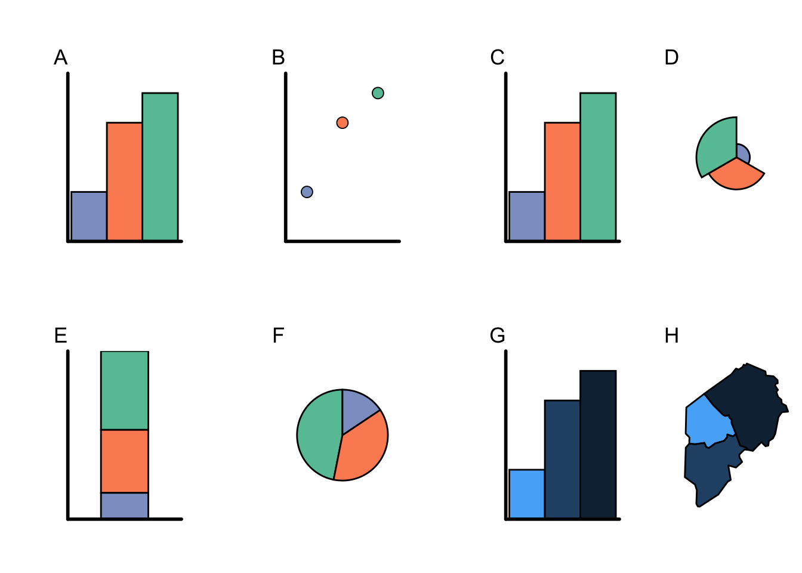
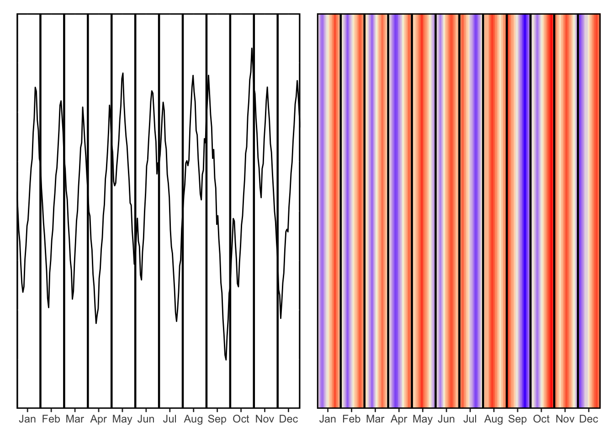
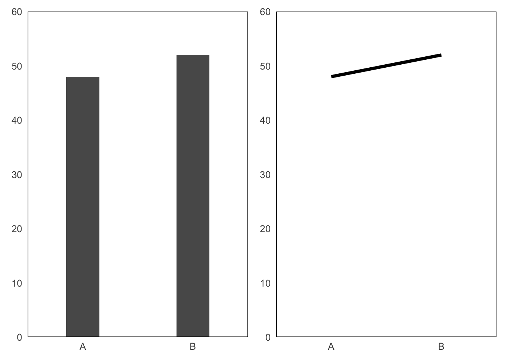
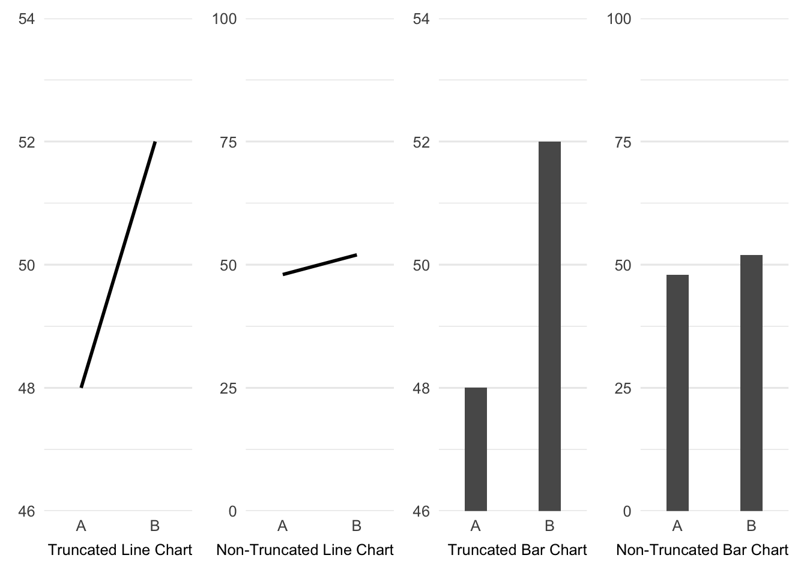
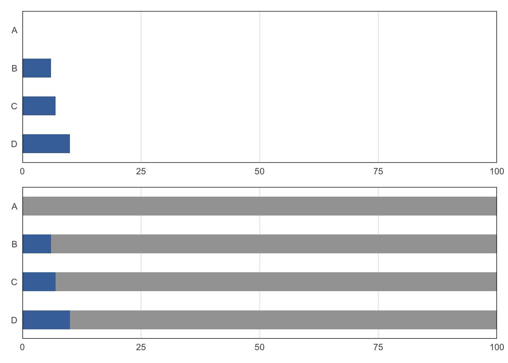

Introduction
Introduction
When communicating with words, metaphors help convey ideas. When communicating with numbers, data visualisations perform a similar role. For example, a list of numbers can allude to an upwards trend, but representing those numbers as visual phenomena facilitates comprehension.
Whilst metaphors are evocative, data visualisations afford precision. Thus, in a line chart plotting an upward trend, the pattern depicted corresponds to the exact nature of the increase. The human visual system’s sensitivity to this systematic depiction makes data visualisation a powerful tool: presenting a different pattern would elicit a different mental representation.
Broadly, data visualisations facilitate mental processing of numerical information. As external representations of data, they reduce perceptual and cognitive burdens in interpretation (Scaife and Rogers, 1996). Data visualisations provide efficiency and clarity, which supports pattern-recognition and reasoning.
However, a single dataset may be depicted in numerous ways, and can vary widely in their effectiveness (Franconeri et al., 2021). Thus, data visualisation’s strength can also be its vulnerability. Outsourcing cognitive processes to a graphical depiction leaves a viewer at the mercy of the chosen method of visual representation. Thus, understanding successful design is crucial.
The effectiveness of data visualisations can be defined in many ways, encompassing their various objectives, which include informing, persuading, engaging and promoting memorability (Bertini et al., 2020). However, in general, successful data visualisations will convey pertinent information in a visually- and cognitively-comprehensible manner (Macklinay, 1986; van Wijk, 2005). Failing to meet these criteria risks misleading viewers, which is antithetical to the purpose of data visualisation. Understanding human factors in visualisation is therefore crucial for ensuring charts, graphs, and maps achieve their potential.
This thesis examines one specific aspect of viewers’ interpretations of data visualisations: how large or small the numbers are. The aim of this work is to demonstrate that data visualisation design affects mental representation of numbers’ magnitudes. Through six empirical experiments, I contribute to knowledge on the cognitive mechanisms involved in forming judgements about magnitude in data visualisations. In this chapter, I review related research to provide context for the empirical work conducted in this project, before outlining the structure of the thesis itself.
A Brief History of Data Visualisation
Throughout history, data visualisations have provided insights on the dominant topics of the day, from science and healthcare to civil rights and warfare. Identifying the first use of visualistion is impossible, but it is clear that humans have used graphic forms to display numerical information for millennia. For example, on a clay tablet dating from 3100-3000 BC, circles and semicircles represent the quantities of the beer rations which were used to pay workers (MacGregor, 2010). Other early visualisations include geographical maps and astronomical diagrams plotting the movements of the planets. The 18th Century saw the development of many common formats used today, such as bar charts, line charts, and pie charts, all of which are typically credited to William Playfair (Friendly, 2006). However, the late 19th Century has been described as ‘The Golden Age of Statistical Graphics’ (Friendly, 2006, pg. 13), generating innovations in the representation of large datasets.
In 1855, John Snow produced a map showing the spatial distribution of cholera deaths in an area of London by displaying a mark at the location where each victim had lived. Deaths clustered near a contaminated water pump substantiated his radical claim that infected water sources spread this disease (Friendly, 2006). This illustrates how data visualisations can be used to demonstrate vitally important patterns and relationships that were previously overlooked. In 1857, Florence Nightingale visualised fatalities in the Crimean war, using a format known as a ‘coxcomb’, or ‘rose diagram’ (Friendly, 2006). Each month’s death toll was represented by the size of a segment projecting from the chart’s centre point (Speigelhalter, 1999). Crucially, the use of colour to distinguish between different causes of death reveals that unsanitary conditions in hospitals were a far bigger threat to life than the battlefield (Friendly and Andrews, 2021). This data visualisation was distributed widely to politicians, including the Prime Minister, promoting awareness of the magnitude of preventable deaths (Magnello, 2012). In 1861, Charles Joseph Minard plotted Napoleon’s Russian invasion and subsequent retreat with an increasingly diminishing army. Part map, part flow diagram, and part line chart, this data visualisation is a paragon of information density, representing six variables in a single graphic whilst telling a coherent story (Tufte, 1983).
Although the above visualisations may appear to reveal major findings for the first time, none of Snow, Nightingale, or Minard used these visualisations to perform their initial analysis. Instead, these visualisations were used for the purposes of persuasion and storytelling (Kosara and Mackinlay, 2013). This is a testament to the effective use of data visualisations as rhetorical devices and instruments for storytelling, rather than as analytical tools. Furthermore, historically significant data visualisations have not always achieved the recognition and response they sought at the time. W.E.B. Du Bois’ data visualisation exhibit on the oppression and development of Black Americans won prizes and medals at the 1900 Paris Exposition (Du Bois, 1900), but was generally overlooked by the mainstream American press (Forrest, 2018).
It is necessary to acknowledge that the history of data visualisation is rather sparse, and to recognise contemporary work in this discipline (Kosara, 2016). Recent innovations in software have generated visualisations with interactive or dynamic elements (Friendly, 2006), but straightforward static visualisations have not disappeared. Indeed, one particularly successful case is the powerfully simple ‘warming stripes’ visualisation (Hawkins, 2018). This design uses coloured stripes to display average global temperature from 1850 to the present, highlighting the rapid increase in recent years using increasingly darker reds. By eschewing date labels, text, and a colour legend, only the fundamental message remains. Accordingly, this visualisation has been reproduced in various unlikely settings for a data visualisation (e.g., music festivals, clothing; Kinitish, 2019), earning a reputation as a recognisable symbol of the climate emergency.
When considering famous data visualisations, both historical and contemporary, it is important to avoid making unfounded conclusions about how particular design choices may have contributed to their success. The effectiveness of these designs is undeniable, on account of their documented influence. However, whilst these examples illustrate that visualisations can be extremely effective, case studies alone do not provide insight into why they are effective. The history of data visualisation reveals the power of visualisations in communication, rather than the principles of good design, and speculation about potential positive attributes is not a reliable source of knowledge. This illustrates the importance of studying data visualisations from a scientific perspective.
There is no guarantee that a well-received visualisation unanimously employs effective practices. Hans Rosling’s presentations (e.g., Rosling, 2006), which used animated visualisations of global health data, illustrate this. Research conducted subsequently reveals variation in the value of his different techniques. These hugely popular presentations included verbal explanations of complex animated graphics, delivered with enthusiasm and a dynamic stage presence. Empirical research using Rosling’s talks as stimuli demonstrates that his narration facilitates comprehension of data visualisations (Obie et al., 2019). However, the same study found that it has no effect on memory and can elicit concerns about trustworthiness. Another study found that static visualisations of this dataset improved understanding, but animated visualisations were more popular (Robertson et al., 2008). Furthermore, these designs also employed variable dot sizes in scatterplots, which can lead to perceptual biases (Anderson et al., 2021; Hong et al., 2021). With so many variables involved in these talks, more research is required to understand the components of effective storytelling with data visualisations (Kosara and Mackinlay, 2013). Rosling’s contributions, in particular his pioneering use of narrative visualisation and his concern for intelligibility, should not be overlooked. Despite this, insight into the effectiveness of specific visualisation practices is best acquired through systematic study.
Data Visualisation Formats and the Grammar of Graphics
There is no one way to represent a dataset visually. Developing a data visualisation involves making a large number of design choices, which can culminate in vastly different results. Chart ‘types’ (e.g., bar chart, pie chart, line chart) offer an easy way to categorise the broad format of a visualisation. However, these categorisations do not reflect the way that data visualisations are constructed or how they function (Wilkinson, 2005). The ‘Grammar of Graphics’ (Wilkinson, 1999) offers an alternative approach.
The Grammar of Graphics is a system for formally defining visualisations in terms of their underlying structure. As a grammar, rather than a taxonomy, it was developed in order to express the composition of any data visualisation through six components (Wilkinson, 2005). Elements describe both the aesthetic attributes which visually encode values (e.g., position, size, hue, transparency), and the geometries which represent those values (e.g., bar, dot, line). Coordinate systems describe the canvas used for representing values. For example, Cartestian coordinates use the recognisable vertical and horizontal dimensions associated with bar charts, polar coordinates use the circular mapping associated with pie charts, map projections use a cartographic mapping associated with world maps. The other components of the Grammar of Graphics are the data used, variable transformations (e.g., mean, sum, rank), scale transformations (e.g., linear scale, logarithmic scale) and guides (e.g., axes, colour legends).
This system allows for efficient and consistent characterisation of different visualisation formats. For example, Figure X shows that bar charts (A) and dot plots (B) both use the same aesthetic attribute (position) to encode values, but differ in their geometry (bar versus dot). A regular bar chart (C) with polar coordinates is equivalent to a chart like Florence Nightingale’s coxcomb (D). Conversely, a stacked bar chart (E) with polar coordinates is equivalent to a regular pie chart (F). Charts can employ more than one aesthetic attribute, for example, the above charts use hue to represent the different categorical values. However, it is possible to use lightness to represent different numerical values instead, with darker colours representing higher values (G). Using this aesthetic attribute, in combination with a map projection and geometries based on the shape of geographic regions, produces a choropleth map (H). This illustrates how the components can be combined in a flexible and modular manner, with many more possible visualisations of this dataset. The Grammar of Graphics has been influential in the development of a number of data visualisation design tools, including Polaris (Stolte et al., 2002), which became Tableau, ggplot2 in R (Wickham, 2010), D3 (Bostock et al., 2011), and Vega-Lite (Satyanarayan et al., 2017).

Data Visualisation Software and the Influence of Default Settings
Considering the process by which data visualisations are created is crucial for understanding this subject. Modern software has made it possible to quickly and easily produce a wide range of visualisations. However, variation across visualisation design tools affects the range visualisation formats available to users and the degree of customisation offered. For example, programming libraries, where data visualisations are created by writing lines of code (e.g., ggplot2 in R, plotly in Python) typically offer more options and greater control than simple point-and-click software (e.g., Microsoft Excel). Many visualisation design tools also provide specialised capabilites. For example, Tableau is often used for business intelligence applications, such as building dashboards (Elias et al., 2013), D3 was developed for designing visualisations for the web (Bostock et al., 2021), VegaLite was developed for generating interactive visualisations (Satyanarayan et al., 2017), and ggplot2 was developed for use within a data analysis workflow (Wickham, 2011).
What is possible and practicable using a particular piece of software will influence a designer’s choices, which may in turn affect viewers’ interpretations. However, visualisation software also initially imposes particular properties on aspects of a visualisation, through its default settings. For example, a pie chart, prior to customisation, will present segments in a particular order, using a particular set of colours. Even when it is possible to reject default designs, they can be highly influential, because they will remain unchanged when it is unclear how or why they should be altered (Shah and Kesan, 2006).
However, existing default settings in data visualisation are not always suitable. For example, by default, software for creating line charts typically employs y-axes which are constrained to the range of the data. Therefore, the highest and lowest values presented at the chart’s extremes, impeding viewers’ ability to gauge the magnitude of the difference. When representing categorical values with colour, designers can improve viewers’ performance by rejecting defaults in favour of colours which correspond semantically with plotted data (e.g., yellow for banana; Lin et al., 2013). When representing continuous values with colour, rainbow colour scales are a popular choice (Ware et al., 2023). However, several tools have changed their default colour scales to encourage designers to avoid the issues in perception associated with this palette (Reda and Szafir, 2021).
Default settings can also cause issues in the generation of visualisations for exploratory analysis (Correll et al., 2019). These visualisations are used to understand the characteristics of a dataset prior to formal statistical analysis. For example, histograms are used to visualise the shape of a univariate distribution. The algorithm used to produce histograms in R and D3 assumes by default that the data are normally-distributed. Consequently, abnormalities in non-normal data are ‘smoothed-over’, preventing viewers from identifying them. Dot plots, another format for visualising distributions, display each individual value using a dot. In R and Tableau, by default, these dots have no translucency. This can result in many overlapping dots in close proximity, impeding a viewer’s ability to differentiate between areas with different densities. This study demonstrates that default settings are not always inappropriate, but when they are agnostic towards characteristics of plotted data, unquestioning use of default settings can conceal relevant aspects of a dataset.
Although the above research exposes issues with some default settings, they are certainly not exclusively harmful. For example, one default setting used by Microsoft Excel is ‘redundant encoding’, where individual data points are represented using different shapes and different colours (e.g., blue diamonds and green triangles). Experimental work has observed that whilst this technique does not confer benefits in some tasks (Gleicher et al. 2013), it improves viewers’ performance in other tasks (Nothelfer et al., 2017). Empirical research is important in order to identify how default settings may be beneficial or detrimental. Indeed, researchers in data visualisation often suggest that their findings may inform the development of default settings (e.g., Heer and Bostock, 2010; Xiong et al., 2021, Kerns and Wilmer, 2021). Several experiments in this thesis were designed to explore the consequences of default settings.
Popular Guidance on Effective Data Visualisation Design
Our understanding of how people interpret data visualisations (and subsequent guidance) is built on shaky foundations. Some received wisdom has not been empirically tested at all, other claims have been discredited or confirmed only recently (Kosara, 2016). Consequently, it is not always clear where evidence ends and opinion starts; intuition and unsubstantiated statements make for “visualisation folklore” (Correll, 2022, pg. 3).
Statistician Edward Tufte is a source of widely-cited advice on the design of data visualisations, which he articulates in popular books such as The Visual Display of Quantitative Information (Tufte, 1986). One famous contribution is the ‘lie-factor’, which attempts to quantify the degree of misrepresentation in charts that distort data. For example, plotting values using two dimensional images exaggerates differences between values, because perceived size is determined by an image’s entire area, not just its height. Consequently, in a visualisation that appears to show a decrease of 42 percentage points, dividing by real numerical decrease of 15 percentage points, generates a lie-factor of 2.8, compared to an ideal score of 1. However, Tufte’s criteria proposed for diagnosing substantial distortion (less than 0.95 or more than 1.05) are based on speculation, rather than scientific evidence (Beattie and Jones, 2002). In similarly arbitrary guidance, Tufte suggests that a dataset of 20 or fewer observations should be presented in a table, rather than a data visualisation. However, a subsequent empirical experiment revealed that pie charts elicited more accurate responses than tables for proportion judgements involving only three observations (Spence and Lewandowsky, 1991).
Tufte also advocated for minimalism in the design of data visualisations. His recommendation to maximise the ‘data-ink ratio’ involves maximising the proportion of ink (i.e., pixels) used to depict the data itself and minimising inessential elements (Tufte, 1986). However, this notion is vague and prone to excessive simplicity. Redundant features can serve to minimise error (Tversky, 1997), with ‘redundant’ tick marks on axes required for accurately extracting numerical values (Kosslyn, 1985). The qualifier “within reason” (Tufte, 1986, pg. 96) is an imprecise addition to this guidance, but empirical research can identify where extreme sparseness unnecessarily biases interpretations (Stock and Behrens, 1991, Gillan and Richman, 1994).
Consistent with his minimalistic approach, Tufte’s recommendation to eliminate ‘chartjunk’ involves avoiding the use of distracting visual embellishments, which range from excessive gridlines to artistic decoration (Tufte, 1986). However, there is mixed evidence regarding the harm caused by chartjunk (Franconeri et al. 2021). However, condemning ‘chartjunk’ remains popular, not just on aesthetic grounds, but also due to the rhetorical qualities of minimalist designs, which imply a straightforward, unbiased presentation of data (Kosara, 2016; Kennedy et al., 2016).
Researchers argue that Tufte’s recommendations for minimalistic designs do not account for human cognitive processing (Wilkinson, 2005; Chabris and Kosslyn, 2005). Furthermore, he has been criticised for failing to support his claims with empirical evidence (Feldman-Stewart et al., 2000). Instead, his guidance is underpinned by a large collection of example visualisations taken from various sources. Therefore, Tufte’s principles might assist in describing common features of some successful visualisations, rather than serving as definitive rules (Kindlmann and Scheidegger, 2014). Rigorous data visualisation research is required to fill gaps in knowledge and generate a reliable evidence-base.
Rigorous Data Visualisation Research
Visualisation research takes many forms. Studies on data visualisation have employed a range of techniques, including controlled experiments, usability tests, interviews, observations, and case studies, and have focused variously on perception, cognition, exploratory data analysis, and user experience (Lam et al., 2011). Experimental psychology studies on data visualisation are particularly valuable because they generate fundamental evidence on how visualisations are interpreted. Conversely, research focused on visualisation design which fails to consider human interpretation does not produce the same type of generalisable knowledge. Inadequate best practice recommendations indicate insufficient understanding of psychological mechanisms. However, progress can be slow, since theories about cognitive and perceptual processes are built through cumulative work (Chen et al., 2020). Psychological research confers benefits in the form of related empirical work, alongside established methods and theories (Correll, 2022; Rensink, 2021).
Multiple studies illustrate that preferences and introspection are not a reliable source of information on effective visualisation practices. For example, an experiment exploring physicians’ judgements about clinical trials found that icon arrays resulted in the most accurate judgements, compared to tables, pie charts, and bar charts (Elting et al., 1999). However, none of the 34 physicians in the sample preferred this format. In another study, medical students almost unanimously preferred visualisations with a rainbow colour scheme, but made fewer errors when using a diverging (e.g., red-blue) colour scheme (Borkin et al., 2011). Tables of values may be favoured over visualisations in certain tasks where the visualisations actually offer significant benefits (Saket et al., 2019). Similarly, participants in Burns et al.’s (2021) study estimated that pictographs took longer to understand, compared to equivalent visualisations without icons. However, this self-report measure was at odds with recorded response times, which indicated no differences between visualisations types. There is also evidence that graduate students preferred certain statistical map designs over others despite conferring no performance advantage (Mendonça and Delazari, 2014). Many authors suggest that preferences are influenced by familiarity, rather than performance advantages. Measuring preferences provides valuable insight into people’s engagement with different visualisations. However, such opinions must be treated appropriately, not used to inform conclusions about effectiveness.
Rensink (2021) presents recommendations for generating useful research findings. Using a single task, and manipulating a single feature of interest, over multiple trials, assists in identifying underlying mechanisms. Integrating explanations from prior research helps ensure explanations of mental processes are sufficiently detailed. Other important but frequently overlooked matters include appropriate counterbalancing, reporting effect sizes and acknowledging individual differences.
There are a multitude of variables that can be manipulated to gain insight into visualisations. Criticisms are sometimes levelled at studies with particularly high or low levels of experimental control. However, researchers must strike an appropriate balance between ecological validity and precision (Abdul-Rahman et al., 2020). Choosing suitable tasks for participants requires a similar trade-off (Suh et al., 2022).
Vision sciences offer a variety of paradigms for assessing various aspects of human performance in visualisation tasks. For example, experiments may evaluate accuracy (by comparing responses to a correct answer), precision (by quantifying variability in responses), or processing speed (by measuring reaction times, Elliott et al., 2020). However, chosen methods must be appropriate for a research question. Whereas methods from vision-sciences are typically concerned with performance in low-level perceptual tasks, other research focuses on decision-making (Padilla et al., 2018) or message-level interpretations (Pandey et al., 2015). The latter concerns broad assessments of data, such as whether a difference is large or small, rather than the ability to extract specific values. This is also referred to as gist (Reyna and Brainerd, 1991).
Perceptual Precision in Data Visualisations
Identifying gaps in our understanding of the psychology of data visualisations requires knowledge of prior lines of inquiry and established findings. Arguably the most influential study in the field of data visualisation is Cleveland and McGill’s (1984) investigation of elementary perceptual processes involved in viewing visualisations. This study sought to establish how precisely viewers can represent different graphical properties used to encode data (e.g., position, length, angle, etc.). For each encoding type, participants identified which of two marks conveyed the smaller value, and estimated the difference in size as a percentage. Subsequent ranking based on the magnitude of participants’ errors produced a hierarchy of visual encoding channels. Since position-encoding produced smaller errors than both length- and angle-encoding, this suggests that data will be represented most precisely when encoded using position on a common (aligned) scale.
This study’s findings have endured replication (Heer and Bostock, 2010) and enthusiasm for perceptual precision has inspired a great deal of important research in this field. This research spans visual processing of proportion (Spence and Lewandovsky, 1991; Hollands and Spence, 1998), variance (Stock and Behrens, 1991), correlation (Harrison et al., 2014; Hong et al., 2021), and other basic processes, such as visual comparison (Simkin and Hastie, 1987; Zacks et al. 1998) and colour discrimination (Szafir, 2018). The study has also influenced development of software for automating visualisation design (Mackinlay, 1986) and simulating visualisation comprehension (Lohse, 1993). However, to consider perceptual precision as the only relevant concern in data visualisation design is unwarranted; many additional factors require consideration.
Beyond Perceptual Precision
Optimally-precise visual cues are not always employed when viewing visualisations. Viewers are sensitive to other task-irrelevant visual cues, which can lead to inaccurate judgements about plotted data (Yuan et al., 2021). Furthermore, in particular tasks, precision can actually hinder, rather than facilitate, judgements. For example, because perceptual averaging benefits from lower spatial frequencies, colour encoding offers greater efficiency than more precise position encoding in line charts (Correll et al., 2012, see Figure 1). Effective decision-making under uncertainty does not necessarily correspond to precision in probability estimation, because of the differences in mental processing associated with these two distinct tasks (Kale et al., 2020).

Furthermore, the choice of graphical encodings employed in a data visualisation can influence the type of interpretation it elicits. For example, viewers are more likely to refer to trends when describing line graphs and discrete differences when describing bar charts (see Figure 2). This can occur even when the nature of the plotted data is ill-suited to this type of characterisation (Zacks and Tversky, 1999). This means that a line chart may provoke a peculiar interpretation such as ‘a building becomes more secure as the alarm system becomes more active’, whereas a bar chart may provoke an interpretation such as ‘a building with 10 motion sensors is more secure than a building with 5 motion sensors’. Similarly, production of bar charts and line charts is also influenced by whether a discrete or continuous relationship is specified in the brief. Design choices also influence beliefs about the distribution of underlying data, when presenting average values. Compared to a data point positioned ‘outside’ a bar, a data point positioned ‘inside’ a bar is more likely to be considered part of the underlying data (Newman and Scholl, 2012). However, confidence intervals eliminate this bias (Pentoney and Berger, 2016). This accords with the notion that viewers’ cognitive associations between visual features and abstract characteristics of data are important in data visualisation design. Through common metaphors (e.g., hierarchy and vertical position), aspects of a design may offer affordances, carrying connotations which encourage particular interpretations (Xiong et al., 2022, Ziemkiewicz and Kosara, 2008, Kindlmann and Scheidegger, 2014).

Attention is another important factor in comprehension of data visualisations. Complex tasks requiring selective attention can cause distinctive patterns in non-focal data to be completely overlooked (Boger et al., 2021). Features of data mentioned in textual summaries are over-weighted in viewers’ mental representations, causing difficulty with the ability to assume the perspective of a naïve viewer (Xiong et al., 2019). In addition, the salience of vertical bars may be responsible for incorrect reports of differences between histograms with identical distributions (Lem et al., 2014). As a solution, explicitly encoding differences between pairs of values can facilitate pattern recognition (Nothelfer and Franconeri, 2020) and highlighting particular attributes can facilitate recall (Ajani et al., 2021).
Simply conveying information is not the only purpose of data visualisations, since they also influence recall, opinion-formation, and decision-making (Bertini et al., 2020). A large number of cognitive biases affect these, and several other aspects of processing data visualisations (Dimara et al., 2020). Whilst it is necessary to consider the precision of elementary perceptual processes, that alone is not sufficient for a comprehensive understanding of how data visualisations function (Bertini et al., 2020).
Manipulating Axes in Data Visualisations
Understanding how inaccurate impressions arise provides insight into mechanisms involved in interpreting data visualisations. This, in turn, can inform recommendations for effective design. A prominent topic in the literature on misleading visualisations is axis truncation. This typically refers to the practice of employing a y-axis which commences with a non-zero value (Correll et al., 2020), though may also be considered any adjustment at either extreme of an x- or y-axis (Pandey, 2015). Figure 3 shows examples.

There is considerable evidence that the range of axis values employed in charts influences interpretations of data. The majority of research on this topic has focused on how constraining the range of an axis, and thus increasing the physical distance between plotted values, increases the perceived magnitude of the difference between those values. For example, accountants appraising financial performance using line and bar charts interpreted plotted increases as larger when they were depicted using a truncated y-axis (Taylor and Anderson, 1986). Similarly, bar charts employing truncated axes biased students’ investment decisions (Arunachalam and Pei, 2002). Students were more likely to select a less-successful company when a truncated chart exaggerated that company’s growth rate, compared to when a non-truncated chart was used. An online experiment also observed that differences between values were considered larger when truncated bar charts were used (Pandey et al., 2015). This experiment examined message-level representations of data by framing questions in terms of subject matter (e.g., access to safe drinking water) rather than graphical elements (e.g., difference in bar length. Other axis manipulations, such as log-scales (Romano et al., 2020), inverted scales (Woodin et al., 2021, Pandey et al., 2015), and expanded axes in scatterplots (Cleveland, 1982) also influence judgements about data.
Risk communication research has independently generated similar findings. Because many hazards cannot be completely avoided, data visualisations are often used to contrast the levels of risk associated with two scenarios (e.g., intervention versus no intervention). Thus, assessments of ‘risk reduction’ are essentially judgements about the magnitude of difference between two values. For example, one experiment compared stacked bar charts, which include additional information on the total number of individuals at risk, to bar charts which displayed only the number of individuals affected (Stone et al., 2003). The latter design increased the bars’ visual disparity, and subsequently increased impressions of the magnitude of difference.
The physical distance between data points consistently biases interpretations of the magnitude of difference in spite of attention to actual numerical values and also design features intended to highlight truncation (Correll et al., 2020). Bias is diminished, but still observed, following explicit warnings about errors in judgement due to y-axis truncation. This suggests that this effect is largely automatic, and does not primarily occur due to insufficient engagement of cognitive capabilities (Yang et al., 2021).
Researchers have also explored individual differences in interpretations of data presented using truncated axes. One study observed no association between participants’ susceptibility to bias due to axis truncation in bar charts and their data visualisation literacy (Yang et al., 2021). Conversely, another experiment suggests that the effect of axis truncation on subjective judgements and quantitative estimates in line charts disappears when accounting for data visualisation literacy (Driessen et al., 2022). However, low variability in observed data visualisation literacy levels in the latter experiment raised concerns about the scale used to measure data visualisation literacy.
Pandey et al. (2015) and Yang et al (2021) propose that this bias could arise due to the dominance of first impressions during translation from graphical schemata (Pinker, 1990) to a ‘real-world’ conceptual understanding (see also, Carpenter and Shah, 1998, Tversky and Kahneman, 1974). Additionally, Yang et al. (2021) suggest that viewers’ beliefs about the communicative intent of a designer could play a role in viewers’ interpretations. Under Grice’s Co-operative Principle (Grice, 1975), communicative contributions in conversation are assumed to be truthful, relevant, clear, and sufficiently informative. To extrapolate this to data visualisations, viewers might infer that differences between values must be genuinely large if they appear large, because they would otherwise not be presented as such.
In How to Lie With Statistics, Huff (1954) suggests that axis truncation creates a false impression of plotted data. This practice has been labelled ‘deceptive’ for both bar and line charts (Lauer and O’Brien, 2020). A tool for automatically identifying and correcting misleading line charts extends y-axes to include zero whenever this value is omitted from the original chart (Fan et al., 2022).
Recent work has presented an alternative perspective on this controversial practice. Non-truncated axes can obscure significant differences just as easily as truncated axes can exaggerate inconsequential differences. The appropriate magnitude to convey depends on what constitutes an important difference in the data at hand (Correll et al., 2020). Indeed, failing to truncate an axis could be considered misleading in certain circumstances (Wainer, 1984). Yang et al. (2021) suggest that effective designs will ensure that a viewer’s immediate characterisation of plotted data closely corresponds to their interpretation following a detailed inspection. Acknowledging that differences must be depicted in proportion to their significance, Witt (2019) reports that axes spanning approximately 1.5 standard deviations provide a balance between sensitivity and bias in fields with standardised effect size measures, such as psychology. Unfortunately, different domains will not necessarily share the same notion of what amounts to a meaningful difference. Choices regarding axis ranges are ultimately designers’ unavoidable decisions (Correll et al., 2020).
Although line charts and bar charts are equally susceptible to biases due to truncation (Correll et al., 2020; Witt et al., 2019), there may be reason to treat them differently. Truncation distorts the mapping between a bar’s extent and the quantity it represents, but free-floating position-encoding used in line charts does not convey quantity in the same manner, providing immunity against such distortion (Bergstrom and West, 2017). Therefore, whilst starting an axis at zero cannot guarantee that differences between values are depicted appropriately, this does ensure adherence to a fundamental aspect of visualisation design. Alternatively, to avoid this trade-off, quantitative data with discrete categories can be plotted using position-encodings only (e.g., dot plots).
Misleading Data Visualisations
Some misleading visualisations may prevent viewers from accurately extracting numerical information. However, research on axis truncation illustrates that misleading visualisations may also interfere with subjective judgements. A line chart may avoid misrepresenting a dataset’s numerical properties yet generate a distorted impression of the magnitude of a trend. The latter is revealed not by assessing the performance of viewers, but their interpretations (Stone et al., 2015).
Influencing subjective judgements may still be considered a misleading practice because a dishonest framing of information could elicit an unreliable interpretation that would differ from the same viewer’s better-informed perspective. Not all aspects of deceptive design are inherently misleading, and deceptiveness can be context-dependent. Comparing examples of ‘misleaders’ from Ge et al.’s (2023) design space helps illustrate this distinction. ‘Concealed uncertainty’ and ‘cherry-picking’ refer to unambiguously deceptive practices, whereas ‘aggregation’ and ‘scale range’ must be preceded by the word inappropriate in order to convey their capacity to deceive.
Data Visualisation Literacy
Understanding individual differences in the ability to comprehend data in visualisations is important for understanding the psychology of data visualisations (Boy et al., 2014). Research on this topic requires reliable tools for measuring data visualisation literacy.
Galesic and Garcia-Retamero’s 13-item test (2011) was based on Friel et al.’s (2001) hierarchy of skills for interpreting visualisations, which ranges from comprehension to extrapolation. Research has demonstrated that this scale can predict whether a graphical representation will facilitate understanding of risk information (Okan et al., 2012). A different 53-item test employs a wide range of data visualisation formats, and higher scores are positively associated with both numeracy and need for cognition (Lee et al., 2019).
Research on data visualisation literacy has tended to focus on interpretation of well-designed charts (Ge et al., 2023). However, the ability to detect (Camba et al., 2022) and make sense of (Ge et al., 2023) misleading charts should be considered an important feature of data visualisation literacy. A robust 30-item test enables assessment of an individual’s ability to accurately comprehend deceptive designs (Ge et al., 2023). This work also suggests that attention and critical thinking may benefit viewers in avoiding some, but not all, biased interpretations. Using Galesic and Garcia-Retamero’s 13-item test (2011), Okan et al. (2016) found that higher data visualisation literacy is associated with more time processing a visualisation’s misleading features, thus promoting correct interpretations. Lower data visualisation literacy is associated with greater reliance on conventions (e.g., the relationship between vertical position and magnitude).
The empirical work presented in this thesis employs the 5-item version of Garcia-Retamero et al.’s (2016) Subjective Graph Literacy scale. Users are asked to rate their competence in working with bar charts, line charts, and pie charts, and also their ability to perform simple tasks using bar charts. This approach echoes prior work in the development of subjective numeracy scales. Despite its short completion time and use of subjective ratings, it is strongly correlated with an objective measure of data visualisation literacy (Galesic and Garcia-Retamero, 2011). The scale also produces a final score out of 30, offering greater sensitivity than a similarly brief objective scale, where tallying correct responses produces a final score out of 4. These characteristics make for an appropriate tool for assessing participants’ data visualisation literacy in experimental studies. Indeed, this measure has been used to assess variability between participants in studies on axis truncation (Yang et al., 2021), correlation (Strain et al., 2023), information synthesis (Mantri et al., 2022), and explanation of visualisations (Yang et al., 2023).
Interpreting Absolute Magnitude
Data visualisation design has the potential to impact subjective judgements of many aspects of data, such as variability, noise, and numerosity. Prior research has closely examined how axis truncation can influence judgements of relative magnitude (differences between values). In contrast, little is known about how axis limits may influence judgements of absolute magnitude: how large or small values are. Despite this, these basic judgements can be fundamental in developing a basic interpretation of quantitative data. For example, assessing the probability of rain, the number of patients on a waiting list, the amount of CO2 emitted during a journey, and the level of support for a political candidate, are all judgements of absolute magnitude. Limited insight into how magnitude is interpreted in data visualisations impedes understanding of how visualisations may effectively communicate magnitude. Prior research on this topic is summarised below.
In bar charts displaying data on individuals affected by a risk, perceived likelihood decreased when the total population at risk was emphasised using shaded bars, rather than blank space (Stone et al., 2017, see Figure 4). In bar charts violating the convention of mapping higher values to higher positions, participants frequently misinterpreted magnitudes (Okan et al., 2012). This was due to difficulty in rejecting first impressions, particularly for participants with low data visualisation literacy. Other work combining judgements of values’ magnitudes with judgements of relative differences has limited examination of the former (Okan et al., 2018). Visualisations that facilitate comprehension of relative differences may fail to effectively communicate the absolute magnitudes of values depicted, illustrating a potential trade-off in design (Reyna et al., 2008).

One study has specifically focused on how axis ranges may inform impressions of absolute magnitude. Sandman et al. (1994) manipulated risk ladders, where individual probabilities are presented on vertical scales incorporating a range of probability values. Changing this range alters the position of a plotted value. Perceived threat (a composite measure made up of perceived likelihood, danger, reported concern and fear) was higher when the risk appeared near to the top of the ladder, compared to near the bottom. This is akin to framing effects described in the psychology literature (Tversky and Kahneman, 1981). However, the position of plotted values did not completely dictate magnitude judgements. A numerically higher risk plotted at the same position near the top of the ladder generated higher ratings. There was also mixed evidence regarding the effects on intentions to spend money mitigating the risk. Confidence in the robustness of these findings is limited by various factors including use of a single trial per participant, a single scenario, a composite measure obscuring pure magnitude ratings, and a confounding variable of the risk ladder’s range.
Comparing linear and logarithmic risk ladders, Freeman et al. (2021) did not replicate Sandman et al.’s (1994) main finding. However, in addition to a graphical cue to magnitude, they used risk ladders which employed additional symbolic number cues in their titles, labels, and accompanying descriptions. A broken scale may also have reduced the degree to which inferences were based on the value’s physical position. Therefore, participants’ judgements may not have been based purely on the appearance of visualisations.
This thesis presents a detailed investigation into how impressions of the magnitude of numerical values are influenced by data visualisation design.
Overview of Thesis
The objective of this thesis is to understand how design choices influence cognitive processing of the magnitude of values presented in data visualisations. I present several empirical studies, each investigating different factors affecting viewers’ interpretations and each using a different data visualisation format.
Chapter 2 discusses how reproducibility issues threaten the validity and trustworthiness of research projects. A lack of transparency decreases the utility of published work for both authors and their peers. Approaches for remedying these issues are presented, in line with recommendations from a variety of disciplines. A particular emphasis is placed on computational reproducibility: the capacity to recreate the computational environment used in generating results. This provides background for the practices used in each of the following empirical research chapters.
Chapter 3 presents a set of three experiments which establish that interpretations of magnitude can be influenced by data visualisation designs. The first experiment demonstrated that manipulating axis limits in dot plots affected participants’ judgements of overall magnitude. A second experiment investigated whether this occurred because axis limits altered the absolute or relative positions of plotted values within axis limits. In dot plots with inverted y-axes, where higher numerical values are presented at lower positions, values near bottom were associated with higher magnitudes. This illustrates that interpretations of magnitude are informed by the relative positions of values within axis limits.
Chapter 4 presents an experiment which explores how visualisations may influence interpretations of magnitude even when the appearance of plotted values remains unchanged. This experiment demonstrated that manipulating colour legend limits in choropleth maps affected participants’ judgements of overall magnitude. Participants rated magnitudes as lower when the range of values on the colour legend extended beyond the largest plotted value. This illustrates that the numerical context accompanying plotted values can influence interpretations of magnitude, without altering the physical appearance of those values.
Chapter 5 presents a set of two experiments which investigate the role of contextual information on interpretations of magnitude. The first experiment demonstrated that participants’ judgements of overall magnitude were affected by extension of bar charts’ upper axis limits which incorporated a denominator value. A second experiment revealed that participants’ bias was increased when this denominator information was excluded from the text accompanying the chart. This illustrates that knowledge about a dataset’s characteristics (e.g., denominator value) can influence the extent to which design choices affect interpretations of magnitude.
Finally, Chapter 6 presents a synthesis of this empirical work, alongside a discussion of implications and future directions.